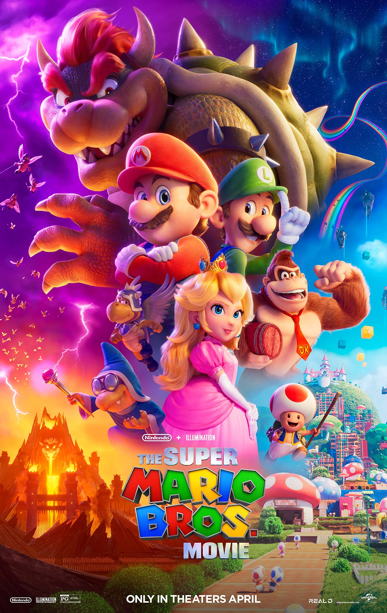
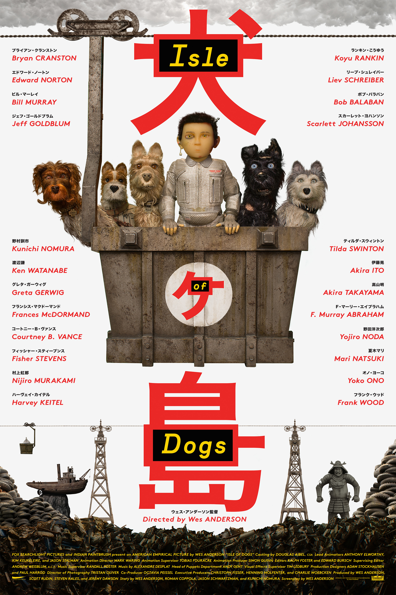
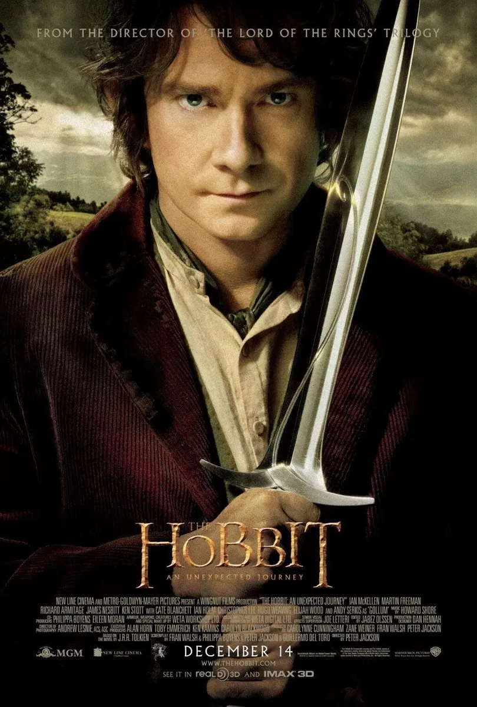
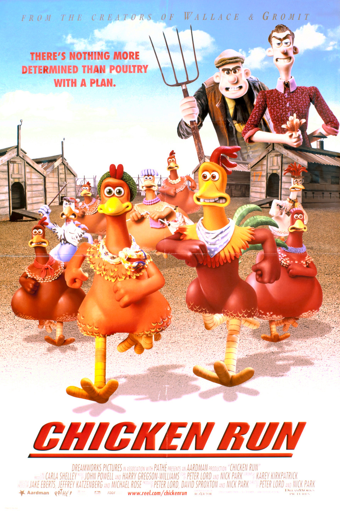
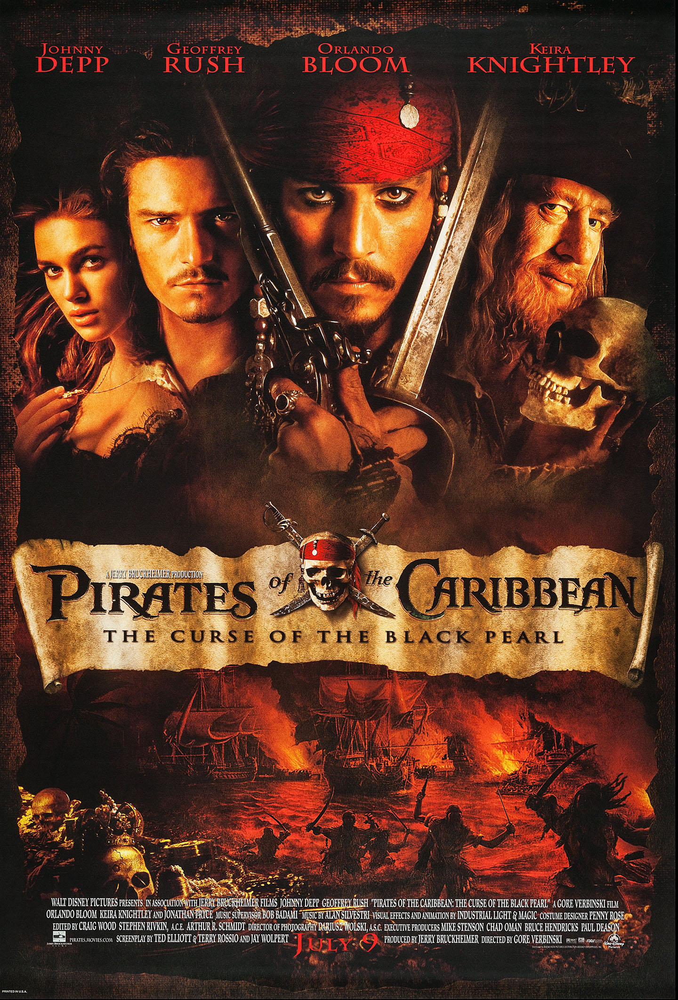
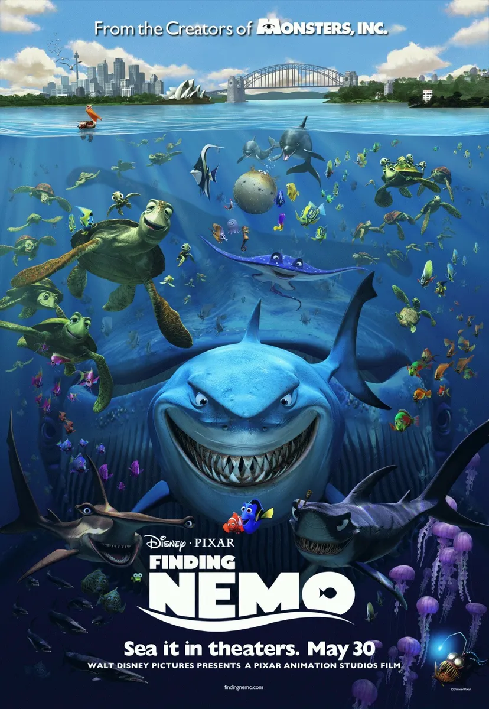
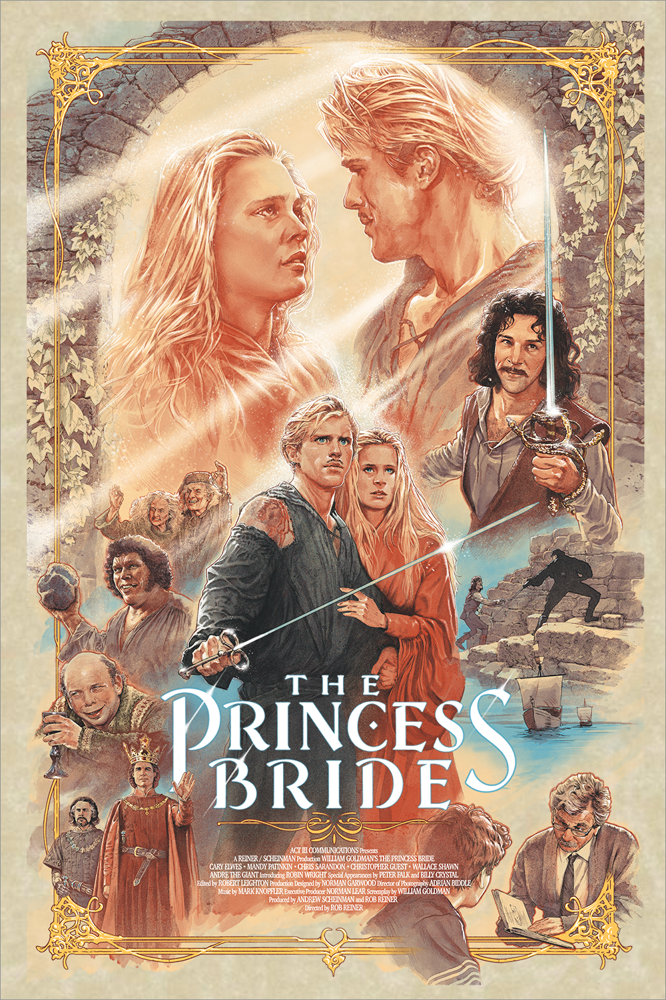

At the height of the Cold War, a mysterious criminal organization plans to use nuclear weapons and technology to upset the fragile balance of power between the United States and Soviet Union. CIA agent Napoleon Solo (Henry Cavill) and KGB agent Illya Kuryakin (Armie Hammer) are forced to put aside their hostilities and work together to stop the evildoers in their tracks. The duo's only lead is the daughter of a missing German scientist, whom they must find soon to prevent a global catastrophe.

In the 1930s, the Grand Budapest Hotel is a popular European ski resort, presided over by concierge Gustave H. (Ralph Fiennes). Zero, a junior lobby boy, becomes Gustave's friend and protege. Gustave prides himself on providing first-class service to the hotel's guests, including satisfying the sexual needs of the many elderly women who stay there. When one of Gustave's lovers dies mysteriously, Gustave finds himself the recipient of a priceless painting and the chief suspect in her murder.

Gary "Eggsy" Unwin (Taron Egerton), whose late father secretly worked for a spy organization, lives in a South London housing estate and seems headed for a life behind bars. However, dapper agent Harry Hart (Colin Firth) recognizes potential in the youth and recruits him to be a trainee in the secret service. Meanwhile, villainous Richmond Valentine (Samuel L. Jackson) launches a diabolical plan to solve the problem of climate change via a worldwide killing spree.

With help from Princess Peach, Mario gets ready to square off against the all-powerful Bowser to stop his plans from conquering the world.

Hiccup (Tawin Yavapolkul) is a Norse teenager from the island of Berk, where fighting dragons is a way of life. His progressive views and weird sense of humor make him a misfit, despite the fact that his father (Kongkrapunt Sangsuriya) is chief of the clan. Tossed into dragon-fighting school, he endeavors to prove himself as a true Viking, but when he befriends an injured dragon he names Toothless, he has the chance to plot a new course for his people's future.

When, by executive decree, all the canine pets of Megasaki City are exiled to a vast garbage-dump called Trash Island, 12-year-old Atari sets off alone in a miniature Junior-Turbo Prop and flies across the river in search of his bodyguard-dog, Spots. There, with the assistance of a pack of newly-found mongrel friends, he begins an epic journey that will decide the fate and future of the entire Prefecture.

When a string of brutal murders terrorizes London, it doesn't take long for legendary detective Sherlock Holmes (Robert Downey Jr.) and his crime-solving partner, Dr. Watson (Jude Law), to find the killer, Lord Blackwood (Mark Strong). A devotee of the dark arts, Blackwood has a bigger scheme in mind, and his execution plays right into his plans. The game is afoot when Blackwood seems to rise from the grave, plunging Holmes and Watson into the world of the occult and strange technologies.

Bilbo Baggins (Martin Freeman) lives a simple life with his fellow hobbits in the shire, until the wizard Gandalf (Ian McKellen) arrives and convinces him to join a group of dwarves on a quest to reclaim the kingdom of Erebor. The journey takes Bilbo on a path through treacherous lands swarming with orcs, goblins and other dangers, not the least of which is an encounter with Gollum (Andy Serkis) and a simple gold ring that is tied to the fate of Middle Earth in ways Bilbo cannot even fathom.

Once upon a time, in a far away swamp, there lived an ogre named Shrek (Mike Myers) whose precious solitude is suddenly shattered by an invasion of annoying fairy tale characters. They were all banished from their kingdom by the evil Lord Farquaad (John Lithgow). Determined to save their home -- not to mention his -- Shrek cuts a deal with Farquaad and sets out to rescue Princess Fiona (Cameron Diaz) to be Farquaad's bride. Rescuing the Princess may be small compared to her deep, dark secret.

Award-winning DreamWorks animation from the Aardman team, telling the story of a band of chickens doomed to a life of egg-laying on a Yorkshire chicken farm. When a flamboyant American rooster arrives on the scene, the hens hope he can teach them to fly to freedom. However, when a chicken-pie making machine is installed, their need becomes urgent and they must devise other means of escape.

Capt. Jack Sparrow (Johnny Depp) arrives at Port Royal in the Caribbean without a ship or crew. His timing is inopportune, however, because later that evening the town is besieged by a pirate ship. The pirates kidnap the governor's daughter, Elizabeth (Keira Knightley), who's in possession of a valuable coin that is linked to a curse that has transformed the pirates into the undead. A gallant blacksmith (Orlando Bloom) in love with Elizabeth allies with Sparrow in pursuit of the pirates.

Marlin (Albert Brooks), a clown fish, is overly cautious with his son, Nemo (Alexander Gould), who has a foreshortened fin. When Nemo swims too close to the surface to prove himself, he is caught by a diver, and horrified Marlin must set out to find him. A blue reef fish named Dory (Ellen DeGeneres) -- who has a really short memory -- joins Marlin and complicates the encounters with sharks, jellyfish, and a host of ocean dangers. Meanwhile, Nemo plots his escape from a dentist's fish tank.

The world needed a hero -- it got a hedgehog. Powered with incredible speed, Sonic embraces his new home on Earth -- until he accidentally knocks out the power grid, sparking the attention of uncool evil genius Dr. Robotnik. Now, it's supervillain vs. supersonic in an all-out race across the globe to stop Robotnik from using Sonic's unique power to achieve world domination.

The plucky characters from a series of animated shorts, Wallace (Peter Sallis) and his dog, Gromit, make their feature debut here. After starting a pest control business, the duo soon lands a job from the alluring Lady Tottington (Helena Bonham Carter) to stop a giant rabbit from destroying the town's crops. Both Wallace and the stuffy Victor (Ralph Fiennes) vie for the lady's affections. If Wallace wants to please his pretty client, and best Victor, he needs to capture that pesky bunny.

A fairy tale adventure about a beautiful young woman and her one true love. He must find her after a long separation and save her. They must battle the evils of the mythical kingdom of Florin to be reunited with each other. Based on the William Goldman novel "The Princess Bride" which earned its own loyal audience.

Woody (Tom Hanks), a good-hearted cowboy doll who belongs to a young boy named Andy (John Morris), sees his position as Andy's favorite toy jeopardized when his parents buy him a Buzz Lightyear (Tim Allen) action figure. Even worse, the arrogant Buzz thinks he's a real spaceman on a mission to return to his home planet. When Andy's family moves to a new house, Woody and Buzz must escape the clutches of maladjusted neighbor Sid Phillips (Erik von Detten) and reunite with their boy.